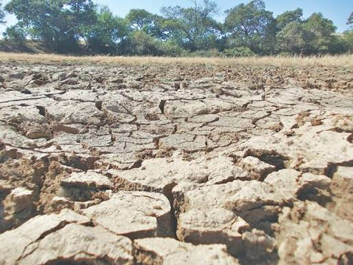

AI’s Water Footprint
Our freshwater will be used by data centers and all that will be left for us is tears.
How Data Center Cooling Affects Local Water Supplies

As we have been led to believe, AI has been using a substantial amount of water thanks to its data centers’ need for cooling. But where does the truth of this statement lie?
Assumptions vs Reality
After checking some statistics I’ve found out that, on average, a datacenter can consume up to 19 million liters of water per day. Which equals to a town of around fifty thousands inhabitants.
One might say that this is outrageous, it’s blasphemy that this much FRESH water is being used on something that isn’t palpable, but merely digital.
But in practice, there exists many kinds of data centers, and they are built up to necessity:
- When one is planning to build a data center, one must consider the water availability of its surrounding. If it is being built near a lake or something of the sort, the presence of water is all but scarce. The engineers will, hence, employ the usage of open loop / water cooled systems; because water is cheaper in that region.
- On the other hand, were one to choose to build their data center in a dry region, they’ll consider employing closed loop / air cooled systems, as power itself is more easily attainable than water in such a place.
Not as devastating as we thought
Therefore, water usage is really not the index we should be worried about, as it’s not a fixed property of each data center.
One that consumes a lot but is near a lake is not as much of an issue as it might seem, as plenty of water is available.
One that is placed in a dry territory will do it’s best not to tap into water as much, as it’s not available.
There’s a chance that it might strain the water supply of the region even more, careful considerations should be taken, but it does in fact not consume more than what a normal factory would.
So, in this sense, it seems less scary.
Final Thoughts
In conclusion, water usage of data centers is not the problem.
It might be seen as wasteful as people might see plenty of water going in and no product coming out, but it must be taken into account that data centers in america consume only 8% of the water that golf courses use.
That’s right.
And arguably, golf is way more pointless than AI.
There are metrics that are worrying (like CO2 emissions and power consumption), but in regard to water usage, it’s an exaggeration to call it worrying.
